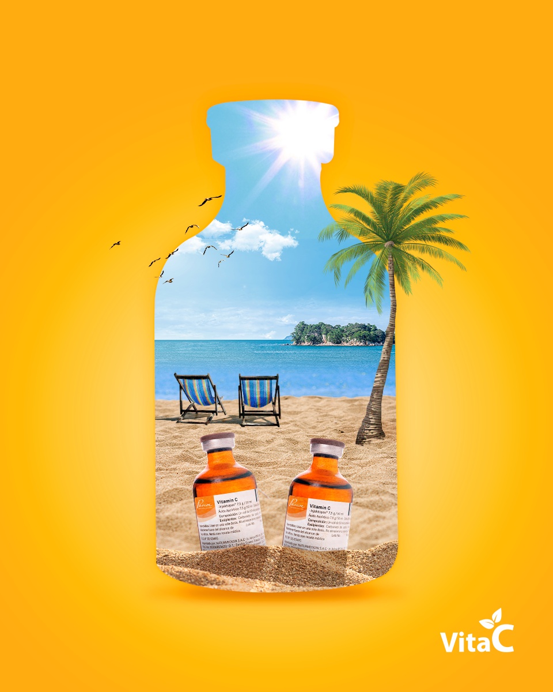
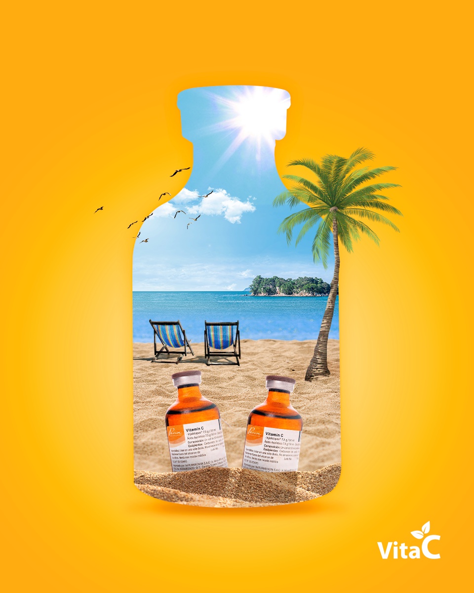

Vita C.
Vita C es un centro de bienestar especializada en aplicaciones de vitamina C vía endovenosa.
Su objetivo en las redes era conseguir fans y tratar de captar la mayor cantidad de clientes posible. Nuestra manera de lograrlo fue a través de influencers que visitaran el centro y compartieran su experiencia.
 
